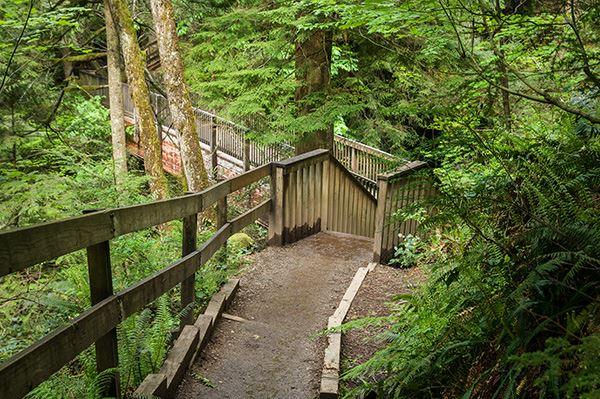
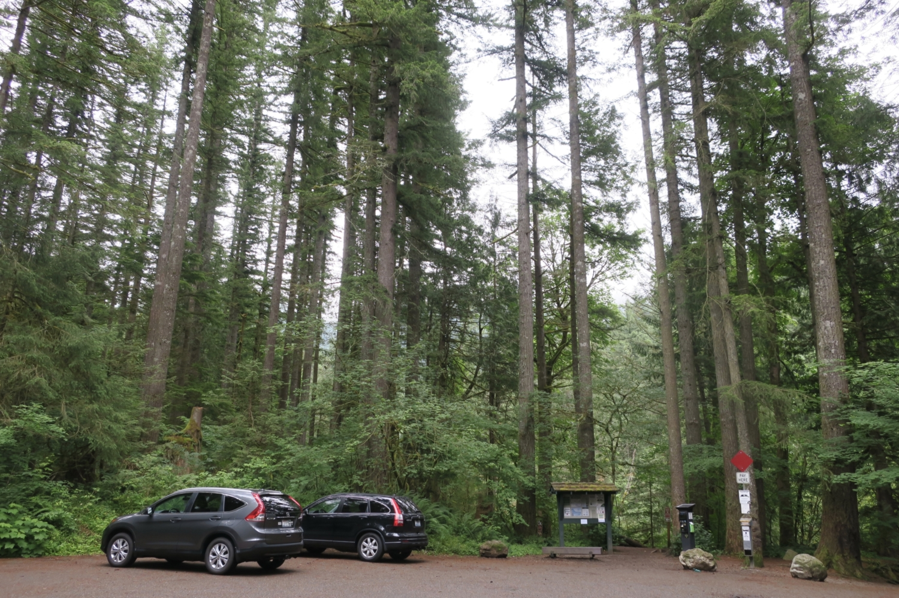
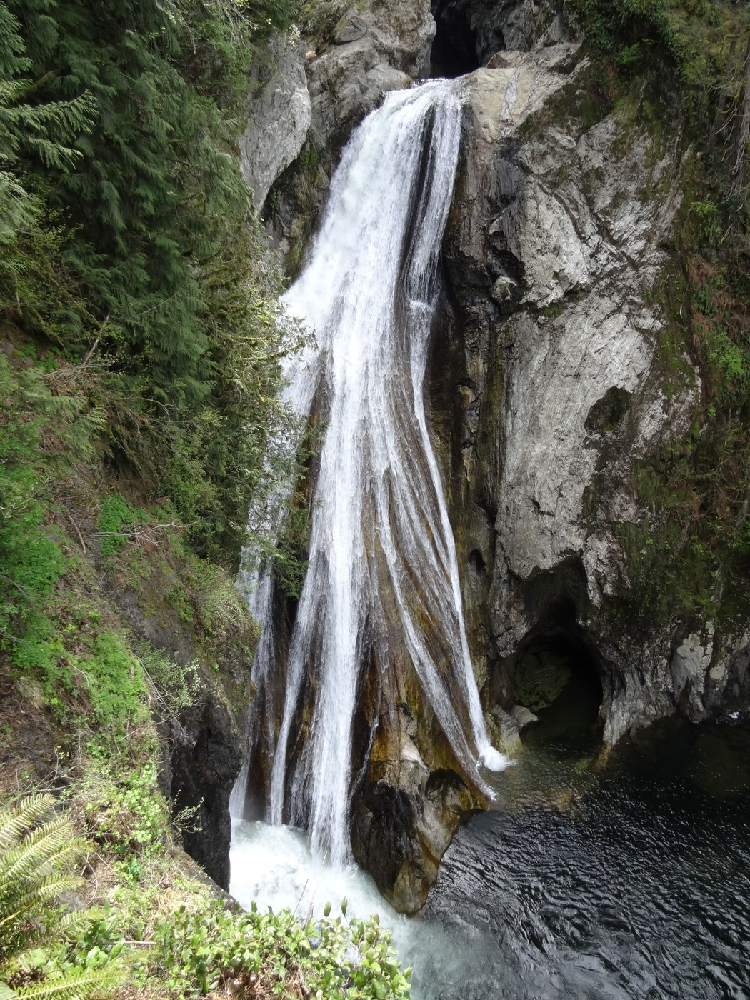

Washington State
Home
Lakes
Lake Chelan
Lake Washington
Rimrock Lake
Hikes
Colchuck Lake Trail
Rattlesnake Ledge Trail
Twin Falls Trailhead
Contact Us
Twin Falls Trailhead
 

Hike:
Twin Falls Trailhead
Length:
2.5 miles
Difficulty:
Moderate
Fun Fact:
Famous for its cascading waterfalls.